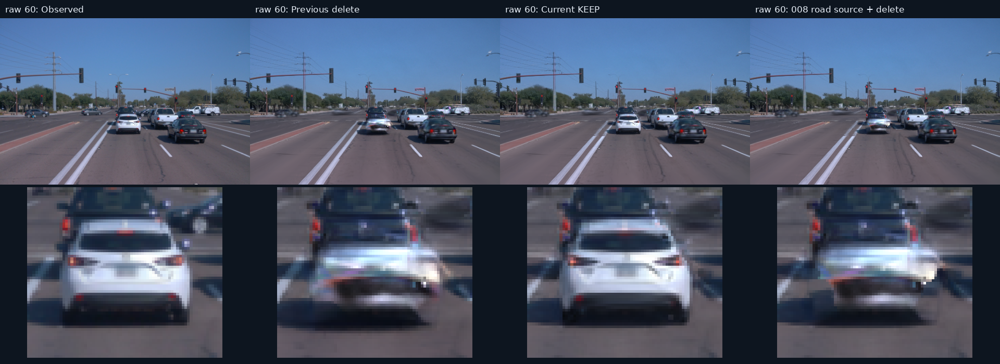
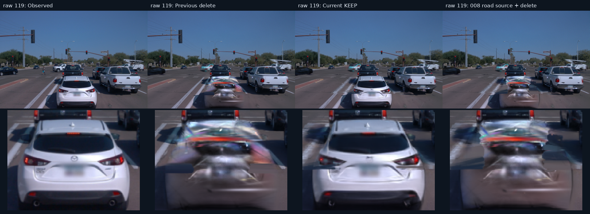
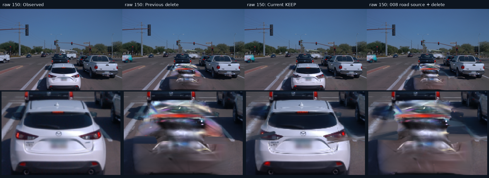
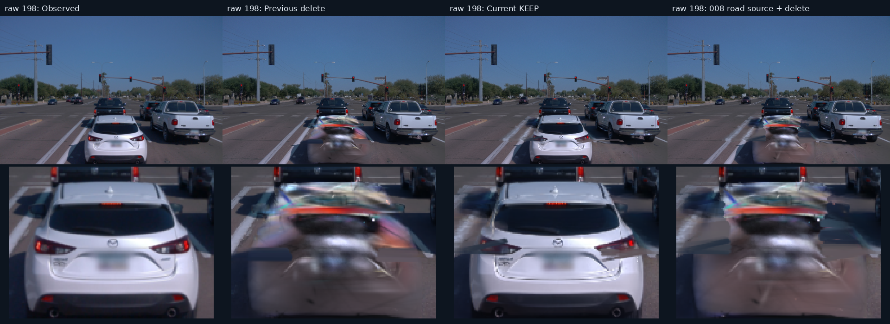
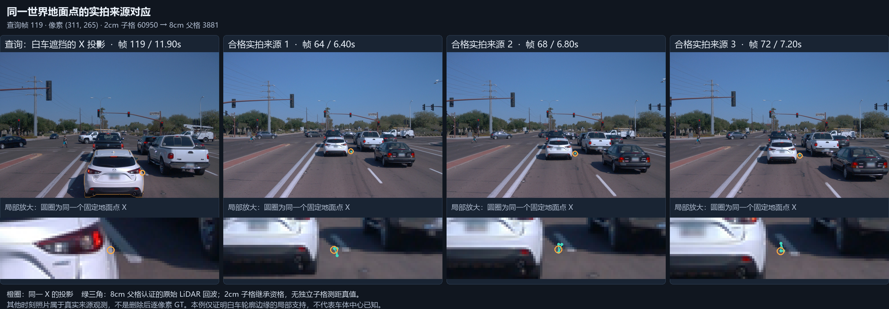
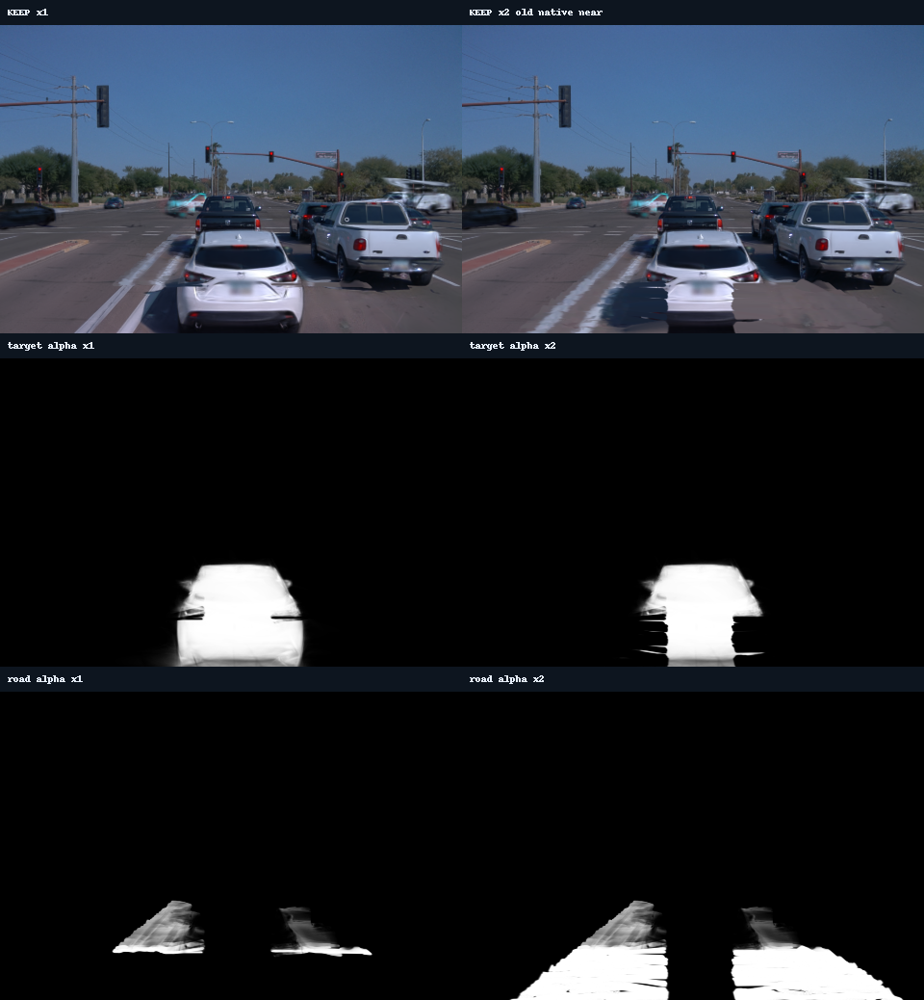
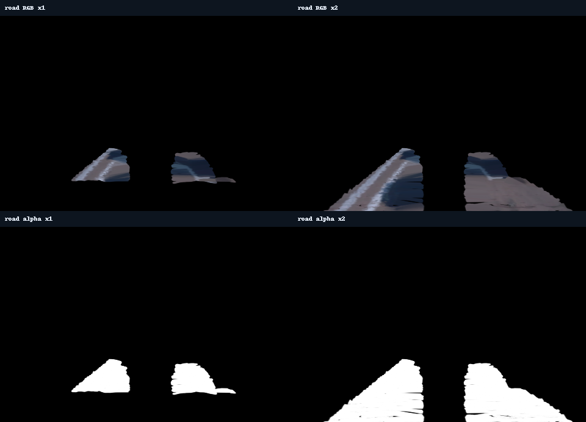
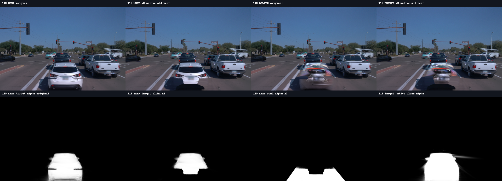

删除正前白色轿车
按场景008的实测来源链补建道路，固定道路后执行1000步保持约束门控。




道路从哪里来
固定世界点 · 测量认证 · 多视图取色先从 LiDAR 建立局部道路曲面，再把同一世界点投到多个时刻的真实 FRONT 图像。8cm父格负责测量与可见性资格，2cm子格继承资格并重新取色。

8cm父格：先确认能看见同一表面
局部测量面与法向，最近回波冲突、小三角形认证、全类型3D框射线遮挡。源图排除原始FRONT标注矩形与已接受遮挡掩码，两者均扩张2像素。
2cm子格：从一致的真实来源取色
LANCZOS准备源图；在sRGB双线性采样后转线性RGB。亮度候选 ≥ q75−0.025，按 |n·view| / z² 评分，至少3个来源颜色差 <0.08。子格不单独获得新的LiDAR认证。
不足时推断，未知处不补造真值
最近可靠沥青格距离≤0.6m时，融合8个邻居颜色，权重1/max(d,0.02)²；推断置信度0.25。构建期干净邻域颜色偏置限幅±0.025，之后道路几何与颜色固定。
图表总量包括远距包围区域和未被当前编辑查询的格，格数比例不是目标像素覆盖率；目标域统计如下。
| 目标车投影内的参考域 | 像素×帧 | 占全部目标像素 |
|---|---|---|
| 真实来源代理 | 1,923 | 0.14% |
| 邻近颜色推断 | 274,606 | 19.54% |
| 当前规则下无 photo 约束 | 1,128,598 | 80.32% |
分母：199帧固定目标车标注共 1,405,127 像素×帧。无 photo 约束也包括保留车辆包围盒、动态显露保护等排除区，不能全部解释为缺失道路 RGB。
指标与验证边界
199帧 pooled MAE · 按像素×帧加权保持差值使用sRGB；道路参考误差使用线性RGB，均为0–1范围的平均绝对误差。原生重建是保持基准；真实观测照片中的目标车仍然存在。
| 区域 | KEEP 对原生重建 | KEEP 对先前 KEEP | DELETE 对本次 KEEP | 像素×帧 |
|---|---|---|---|---|
| 正前白色轿车 | 0.01023 | 0.01526 | 0.25231 | 1,405,127 |
| 前方黑色皮卡 | 0.00046 | 0.00045 | 0.00329 | 274,555 |
| 右侧白色皮卡 | 0.00112 | 0.00113 | 0.00000 | 1,081,722 |
| 目标车之外 | 0.00206 | 0.00237 | 0.00029 | 29,161,273 |
固定先前参考域
| 来源角色 | 先前 DELETE | 本次 DELETE | Δ | 像素×帧 |
|---|---|---|---|---|
| 真实来源代理 | 0.02474 | 0.04320 | +0.01846 | 70,853 |
| 邻近颜色推断 | 0.02997 | 0.04593 | +0.01596 | 436,293 |
本次新建参考域
| 来源角色 | 先前 DELETE | 本次 DELETE | Δ | 像素×帧 |
|---|---|---|---|---|
| 真实来源代理 | 0.03019 | 0.01218 | -0.01802 | 1,923 |
| 邻近颜色推断 | 0.04793 | 0.02660 | -0.02133 | 274,606 |
本次道路的近裁剪复核
正式来源资产 · 6次forward · 更新0步
放开道路裁剪，会破坏KEEP白车
CUDA栅格化器硬编码近裁剪 z≤0.2；本场景米到模型比例为 0.01884993，对应 10.610m。模型、相机平移与高斯尺度统一×2、协方差×4，投影保持不变，物理裁剪距离缩至 5.305m。
场景归一化会改变常量的物理含义。008元数据的米到模型比例为 0.1000，本场景为 0.01884993；对同一0.2裁剪常量，分别对应约 2.00m 与 10.61m。这是同一内核下的尺度换算，未重跑008历史二进制。尺度元数据
在本次道路的目标拟合域内，纯道路alpha明显上升；同域KEEP目标alpha下降，而道路贡献上升。道路补全与目标保持仍存在遮挡冲突，不能把统一缩放直接用于正式结果。
| 平均alpha · 固定目标拟合域 | ×1 | 统一×2 |
|---|---|---|
| 帧119 · 纯道路 | 0.38941 | 0.99885 |
| 帧198 · 纯道路 | 0.36854 | 0.99828 |
| 帧119 · KEEP目标车 | 0.80270 | 0.25345 |
| 帧119 · KEEP道路 | 0.09714 | 0.72263 |
固定分母为 target_fit：帧119共 2,518 像素（真实来源 8，推断 2,510），帧198共 2,601 像素；既不是全车体，也不是旧资产的inside_active域。KEEP对照继续保留原生近裁剪资格。
199帧保护域核查未发现拟合域与显露/包围盒保护域冲突；这项接线检查不证明画质。近裁剪辅助函数继续保持诊断用途。
本次纯道路RGB与alpha对照原图

历史旧道路的深度与近处原生行诊断
以下仅为旧道路资产的补充诊断，统计域与本次target_fit不同。旧帧119的目标与道路重叠域中，原生目标深度中位数为 10.78m，道路为 8.59m；不能将这组数值称为本次同域深度。
在旧资产对照中允许先前被裁掉的原生近处行后，帧119/198目标深度分别约 6.62m / 7.05m，KEEP alpha恢复，但出现横条重影。该控制同样不能直接上线。

执行记录
方法预算与工程开销分别记账正式运行与保持约束
全部199帧按固定随机顺序完整遍历，每帧实际访问5或6次。32步保存、真实KEEP/DELETE短程检查，再续跑968步。恢复收据：完整状态精确恢复，差异为空。
来源与冻结范围
合成函数比对 15 项；真实帧119父格、子格接线比对 10 项。这些检查核对公式与数据接线，不替代图像验收。
原30K几何、SH与环境参数保持；本次无静态RGB混合，前方黑色皮卡补全资产不改。旧模型、日志和图像保留。
对象编号、完整收据与预算说明
目标：正前白色轿车，原track NTjq…，label10，别名a9；保持前方黑色皮卡label21、右侧白色皮卡label8。KEEP保留目标车，DELETE查询删除目标车。机器汇总中的 human_verdict 继续保持 null；上方文字仅记录实际原图观察。
额外1064步 = 已放弃的三个材质工程原型1000+32+32，单列，不计入本次正式1000步。32+968属于本次同一预算；诊断对照更新0步。旧原型的合同与局限保留在历史审查中。
场景适配包括新的道路图表范围、全部BUILD帧的清晰度归一化、新输入的测量面；保留008局部高度残差与法向公式。本次采用的构建期颜色校准与保持约束不产生独立隐藏真值。
- GPU：NVIDIA GeForce RTX 4080 SUPER
- 来源构建 / 秒：212.2
- 正式门控 / 秒：243.4
- 结果渲染 / 秒：239.8
- CPU评价 / 秒：19.9

资源与几何依赖原始记录
{
"task": "WAYMO-065-008-ROAD-HANDOFF-20261111",
"gpu": "NVIDIA GeForce RTX 4080 SUPER",
"frames": 199,
"heldout": 0,
"source_seconds": 212.17131977528334,
"formal_seconds": 243.42663355357945,
"render_seconds": 239.75233276933432,
"cpu_evaluation_seconds": 19.90077298693359,
"timing_role": "process wall seconds include parsing/render/compression; not measured GPU utilization seconds",
"formal_gate_updates": 1000,
"formal_split": [
32,
968
],
"extra_engineering_updates": 1064,
"native_updates": 0,
"extra_engineering_runs": [
{
"path": "/root/autodl-tmp/drivingeditor_repro/campaign/waymo_val065_road_completion_20261111_r1/appearance_handoff",
"updates": 1000,
"reason": "188-frame sampling; explicit material prior prototype not adopted"
},
{
"path": "/root/autodl-tmp/drivingeditor_repro/campaign/waymo_val065_road_completion_20261111_r1/appearance_handoff_allframes",
"updates": 32,
"reason": "random with replacement did not guarantee full visit coverage"
},
{
"path": "/root/autodl-tmp/drivingeditor_repro/campaign/waymo_val065_road_completion_20261111_r1/appearance_handoff_allframes_cycle",
"updates": 32,
"reason": "balanced material pilot stopped when user requested 008 source chain"
}
],
"exact_full_state_restore": {
"exact_full_state": true,
"differences": [],
"step": 32
},
"frame_coverage": {
"frames": 199,
"updates": 1000,
"counts": {
"0": 5,
"1": 5,
"2": 5,
"3": 5,
"4": 5,
"5": 5,
"6": 5,
"7": 5,
"8": 5,
"9": 5,
"10": 5,
"11": 5,
"12": 5,
"13": 5,
"14": 5,
"15": 5,
"16": 5,
"17": 5,
"18": 5,
"19": 5,
"20": 5,
"21": 5,
"22": 5,
"23": 5,
"24": 5,
"25": 5,
"26": 5,
"27": 5,
"28": 5,
"29": 5,
"30": 5,
"31": 5,
"32": 5,
"33": 5,
"34": 5,
"35": 5,
"36": 5,
"37": 5,
"38": 5,
"39": 5,
"40": 5,
"41": 5,
"42": 5,
"43": 5,
"44": 5,
"45": 5,
"46": 5,
"47": 5,
"48": 5,
"49": 5,
"50": 5,
"51": 5,
"52": 5,
"53": 5,
"54": 5,
"55": 5,
"56": 5,
"57": 5,
"58": 5,
"59": 5,
"60": 5,
"61": 5,
"62": 5,
"63": 5,
"64": 5,
"65": 5,
"66": 5,
"67": 5,
"68": 5,
"69": 5,
"70": 5,
"71": 5,
"72": 5,
"73": 5,
"74": 5,
"75": 5,
"76": 5,
"77": 5,
"78": 5,
"79": 5,
"80": 5,
"81": 6,
"82": 6,
"83": 6,
"84": 5,
"85": 5,
"86": 5,
"87": 5,
"88": 5,
"89": 5,
"90": 5,
"91": 5,
"92": 5,
"93": 5,
"94": 5,
"95": 5,
"96": 5,
"97": 5,
"98": 5,
"99": 5,
"100": 5,
"101": 5,
"102": 5,
"103": 5,
"104": 5,
"105": 5,
"106": 5,
"107": 5,
"108": 5,
"109": 5,
"110": 5,
"111": 5,
"112": 5,
"113": 5,
"114": 5,
"115": 5,
"116": 6,
"117": 5,
"118": 5,
"119": 5,
"120": 5,
"121": 5,
"122": 5,
"123": 5,
"124": 5,
"125": 5,
"126": 5,
"127": 5,
"128": 5,
"129": 5,
"130": 5,
"131": 5,
"132": 5,
"133": 5,
"134": 5,
"135": 5,
"136": 5,
"137": 6,
"138": 5,
"139": 5,
"140": 5,
"141": 5,
"142": 5,
"143": 5,
"144": 5,
"145": 5,
"146": 5,
"147": 5,
"148": 5,
"149": 5,
"150": 5,
"151": 5,
"152": 5,
"153": 5,
"154": 5,
"155": 5,
"156": 5,
"157": 5,
"158": 5,
"159": 5,
"160": 5,
"161": 5,
"162": 5,
"163": 5,
"164": 5,
"165": 5,
"166": 5,
"167": 5,
"168": 5,
"169": 5,
"170": 5,
"171": 5,
"172": 5,
"173": 5,
"174": 5,
"175": 5,
"176": 5,
"177": 5,
"178": 5,
"179": 5,
"180": 5,
"181": 5,
"182": 5,
"183": 5,
"184": 5,
"185": 5,
"186": 5,
"187": 5,
"188": 5,
"189": 5,
"190": 5,
"191": 5,
"192": 5,
"193": 5,
"194": 5,
"195": 5,
"196": 5,
"197": 5,
"198": 5
},
"min_count": 5,
"max_count": 6
},
"geometry_without_colour_reproduction": {
"fields_exactly_equal": {
"keys": true,
"local_xyz": true,
"world_xyz": true,
"model_from_world": true
},
"source_colour_or_ROI_used": false
},
"source_lifecycle": "actual 32-step save and KEEP/DELETE CLI; exact optimizer/RNG/queue restore;968remaining",
"hour_scale_training": false,
"ten_minute_hour_scale_smoke_applicable": false,
"native_checkpoint_metadata_unchanged": true,
"native_raster_unit_adapter_enabled": false,
"native_model_geometry_SH_environment_updates": 0,
"vehicle_completion_branch_changed": false,
"manual_appearance_roi_in_final": false,
"source_frames": [
0,
1,
2,
3,
4,
5,
6,
7,
8,
9,
10,
11,
12,
13,
14,
15,
16,
17,
18,
19,
20,
21,
22,
23,
24,
25,
26,
27,
28,
29,
30,
31,
32,
33,
34,
35,
36,
37,
38,
39,
40,
41,
42,
43,
44,
45,
46,
47,
48,
49,
50,
51,
52,
53,
54,
55,
56,
57,
58,
59,
60,
61,
62,
63,
64,
65,
66,
67,
68,
69,
70,
71,
72,
73,
74,
75,
76,
77,
78,
79,
80,
81,
82,
83,
84,
85,
86,
87,
88,
89,
90,
91,
92,
93,
94,
95,
96,
97,
98,
99,
100,
101,
102,
103,
104,
105,
106,
107,
108,
109,
110,
111,
112,
113,
114,
115,
116,
117,
118,
119,
120,
121,
122,
123,
124,
125,
126,
127,
128,
129,
130,
131,
132,
133,
134,
135,
136,
137,
138,
139,
140,
141,
142,
143,
144,
145,
146,
147,
148,
149,
150,
151,
152,
153,
154,
155,
156,
157,
158,
159,
160,
161,
162,
163,
164,
165,
166,
167,
168,
169,
170,
171,
172,
173,
174,
175,
176,
177,
178,
179,
180,
181,
182,
183,
184,
185,
186,
187,
188,
189,
190,
191,
192,
193,
194,
195,
196,
197,
198
],
"production_tests": 26,
"original_function_parity_checks": 15,
"real_data_parity_checks": 10,
"reference_wiring_checks": 14,
"physically_correct_depth_not_certified": true,
"quality_accepted": false,
"human_verdict": null,
"automatic_shutdown": false,
"failures": [
"V82-F06"
],
"command_records": {
"fit32": {
"command": [
"/root/autodl-tmp/envs/drivingeditor/bin/python",
"-B",
"-m",
"drivingeditor_dynamic_edit.v44_road_gate_fit",
"--manifest",
"/root/autodl-tmp/drivingeditor_repro/campaign/waymo_val065_road_completion_20261111_r1/multiview008_r2/road_manifest.json",
"--views",
"/root/autodl-tmp/drivingeditor_repro/campaign/waymo_val065_road_completion_20261111_r1/multiview008_r2/world_road/views",
"--baseline",
"/root/autodl-tmp/drivingeditor_repro/campaign/waymo_val065_delete30k_20261109_r1/semantic_delete",
"--delete-track-id",
"NTjq-OhZ_97OMJ4xwJAxXg",
"--keep-baseline",
"/root/autodl-tmp/drivingeditor_repro/campaign/waymo_val065_allframes10k_20261109_r1/continuation30k_20261109_r1/v1_30000",
"--output",
"/root/autodl-tmp/drivingeditor_repro/campaign/waymo_val065_road_completion_20261111_r1/multiview008_r2/gate_experiment/fit32",
"--steps",
"32"
],
"seconds": 36.06080475449562,
"exit_code": 0
},
"fit1000": {
"command": [
"/root/autodl-tmp/envs/drivingeditor/bin/python",
"-B",
"-m",
"drivingeditor_dynamic_edit.v44_road_gate_fit",
"--manifest",
"/root/autodl-tmp/drivingeditor_repro/campaign/waymo_val065_road_completion_20261111_r1/multiview008_r2/road_manifest.json",
"--views",
"/root/autodl-tmp/drivingeditor_repro/campaign/waymo_val065_road_completion_20261111_r1/multiview008_r2/world_road/views",
"--baseline",
"/root/autodl-tmp/drivingeditor_repro/campaign/waymo_val065_delete30k_20261109_r1/semantic_delete",
"--delete-track-id",
"NTjq-OhZ_97OMJ4xwJAxXg",
"--keep-baseline",
"/root/autodl-tmp/drivingeditor_repro/campaign/waymo_val065_allframes10k_20261109_r1/continuation30k_20261109_r1/v1_30000",
"--output",
"/root/autodl-tmp/drivingeditor_repro/campaign/waymo_val065_road_completion_20261111_r1/multiview008_r2/gate_experiment/fit1000",
"--steps",
"1000",
"--resume",
"/root/autodl-tmp/drivingeditor_repro/campaign/waymo_val065_road_completion_20261111_r1/multiview008_r2/gate_experiment/fit32/checkpoint000032.pt"
],
"seconds": 207.36582879908383,
"exit_code": 0
},
"keep": {
"command": [
"/root/autodl-tmp/envs/drivingeditor/bin/python",
"-B",
"-m",
"drivingeditor_dynamic_edit.v44_cli",
"render",
"--manifest",
"/root/autodl-tmp/drivingeditor_repro/campaign/waymo_val065_road_completion_20261111_r1/multiview008_r2/gate_experiment/keep_manifest.json",
"--query",
"/root/autodl-tmp/drivingeditor_repro/campaign/waymo_val065_road_completion_20261111_r1/multiview008_r2/gate_experiment/keep_query.json",
"--output",
"/root/autodl-tmp/drivingeditor_repro/campaign/waymo_val065_road_completion_20261111_r1/multiview008_r2/gate_experiment/keep"
],
"seconds": 117.68581797555089,
"exit_code": 0
},
"delete": {
"command": [
"/root/autodl-tmp/envs/drivingeditor/bin/python",
"-B",
"-m",
"drivingeditor_dynamic_edit.v44_cli",
"render",
"--manifest",
"/root/autodl-tmp/drivingeditor_repro/campaign/waymo_val065_road_completion_20261111_r1/multiview008_r2/gate_experiment/delete_manifest.json",
"--query",
"/root/autodl-tmp/drivingeditor_repro/campaign/waymo_val065_road_completion_20261111_r1/multiview008_r2/gate_experiment/delete_query.json",
"--output",
"/root/autodl-tmp/drivingeditor_repro/campaign/waymo_val065_road_completion_20261111_r1/multiview008_r2/gate_experiment/delete"
],
"seconds": 122.06651479378343,
"exit_code": 0
},
"roundtrip": {
"command": [
"/root/autodl-tmp/envs/drivingeditor/bin/python",
"-B",
"-m",
"drivingeditor_dynamic_edit.v44_regression",
"--manifest",
"/root/autodl-tmp/drivingeditor_repro/campaign/waymo_val065_road_completion_20261111_r1/multiview008_r2/gate_experiment/final_manifest.json",
"--queries",
"/root/autodl-tmp/drivingeditor_repro/campaign/waymo_val065_road_completion_20261111_r1/multiview008_r2/gate_experiment/roundtrip_queries.json",
"--frames-json",
"[60, 119, 150, 198]",
"--output",
"/root/autodl-tmp/drivingeditor_repro/campaign/waymo_val065_road_completion_20261111_r1/multiview008_r2/gate_experiment/roundtrip.json"
],
"seconds": 9.741943553090096,
"exit_code": 0
}
}
}